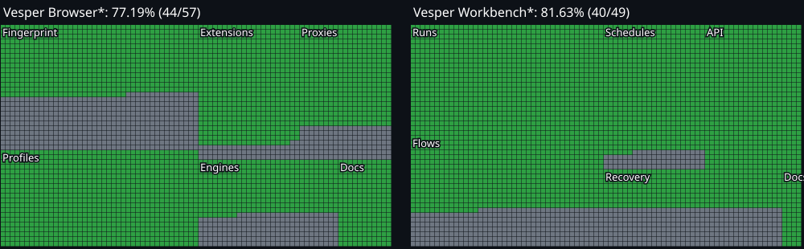

Browser 0.4.13 / Workbench 0.5.18
Measured progress
82 of 106 named checks verified.
Named acceptance checks for the current local Vesper roadmap. Counts are not a percentage of vendor features, total engineering effort or detection resistance. Source, packaged tests and actual installation evidence have separate gates. A checked item covers its stated scope only.

Browser: Profiles
- verifiedCreateEvidence
- verifiedEdit stopped profilesEvidence
- verifiedOpen and stopEvidence
- verifiedPersistent storageEvidence
- verifiedIndependent duplicateEvidence
- verifiedArchive import/exportEvidence
- verifiedFoldersEvidence
- verifiedTags and notesEvidence
- verifiedFavorites and searchEvidence
- verifiedTrash and restoreEvidence
- verifiedRevision conflictsEvidence
- verifiedRun ownership leasesEvidence
- verifiedDetached service ownershipEvidence
Browser: Identity and rendering
- verifiedReal ChromiumEvidence
- verifiedLocale and timezoneEvidence
- verifiedNew-target policyEvidence
- verifiedPage CPU policyEvidence
- verifiedNative CPU getterEvidence
- verifiedNative memory/client hintEvidence
- verifiedNative RGBA8 canvasEvidence
- verifiedPersisted native seedEvidence
- in progressCoherent browser personasEvidence
- in progressWebGL identityEvidence
- plannedWebGPU identityEvidence
- in progressAudio surfacesEvidence
- in progressFont exposureEvidence
- plannedMedia devicesEvidence
- plannedHeaded screen consistencyEvidence
- verifiedCustom binary qualificationEvidence
Browser: Connections
Browser: Extensions
- verifiedBounded MV3 ZIP importEvidence
- verifiedPermissions and versionsEvidence
- verifiedPer-profile assignmentEvidence
- verifiedImmutable package checksEvidence
- verifiedRestart storage persistenceEvidence
- verifiedPortable extension archiveEvidence
- verifiedCatalog removalEvidence
- plannedVersion storage migrationEvidence
- verifiedLong Windows launch pathsEvidence
Browser: Desktop and engines
Workbench: Run lifecycle
- verifiedValidated automation inputsEvidence
- verifiedBrowser API launchEvidence
- verifiedDurable run queueEvidence
- verifiedFollow-up inputEvidence
- verifiedCooperative pause/resumeEvidence
- verifiedCancellation and deadlinesEvidence
- verifiedFinish and closeEvidence
- verifiedArchive checksumEvidence
- verifiedSaved run historyEvidence
- verifiedIdentity/profile reuseEvidence
- verifiedFailed-run preservationEvidence
- verifiedLease releaseEvidence
Workbench: Visual flows
- verifiedDeclarative flow packsEvidence
- verifiedGraph layoutEvidence
- verifiedAction inspectorEvidence
- verifiedDraft revisionsEvidence
- verifiedUndo and redoEvidence
- verifiedValidationEvidence
- verifiedImmutable publicationEvidence
- verifiedPublished run selectionEvidence
- plannedInteraction recorderEvidence
- plannedVisual branches and loopsEvidence
- plannedExtraction authoringEvidence
- plannedRecognition authoringEvidence
Workbench: Schedules
Workbench: Integration
- verifiedEmbedded Browser plug-inEvidence
- verifiedSeparate Browser/Workbench APIsEvidence
- verifiedTypeScript clientsEvidence
- verifiedPython clientsEvidence
- verifiedStreamed archive transportEvidence
- verifiedExtension-enabled automationEvidence
- plannedSelenium qualificationEvidence
- plannedDurable event replay coverageEvidence
Workbench: Release and recovery
- verifiedOffline update signaturesEvidence
- verifiedVerified upgrade backupEvidence
- verifiedPreserved coordinator identityEvidence
- verifiedNew desktop feature releaseEvidence
- plannedFull rollback-cycle testEvidence
- plannedForced-exit recovery matrixEvidence
- plannedCapacity/performance benchmarkEvidence
- plannedLocal roles and sharingEvidence
Browser: Docs
Workbench: Docs
- verifiedBrowser/Workbench user and developer guidesEvidence
Private raw receipts, profiles, archives and runtime binaries remain local. Public evidence describes the measurements without publishing those private files.